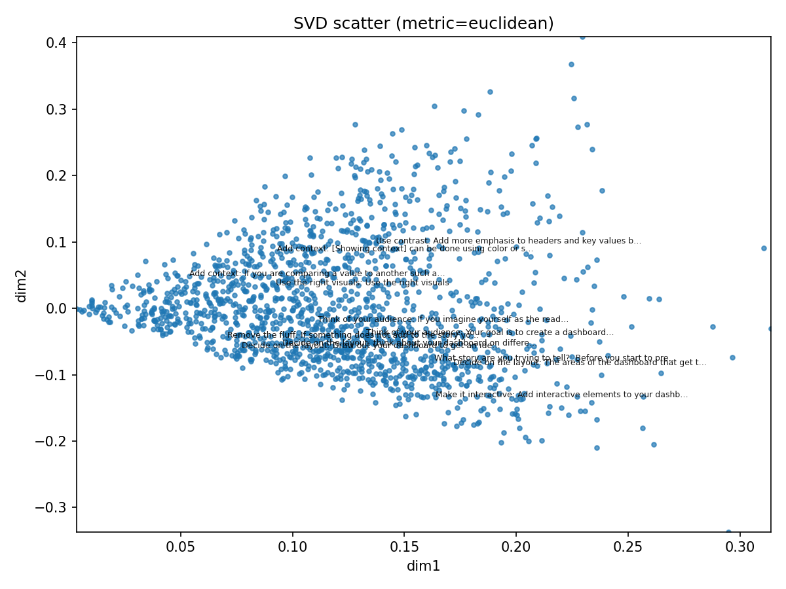
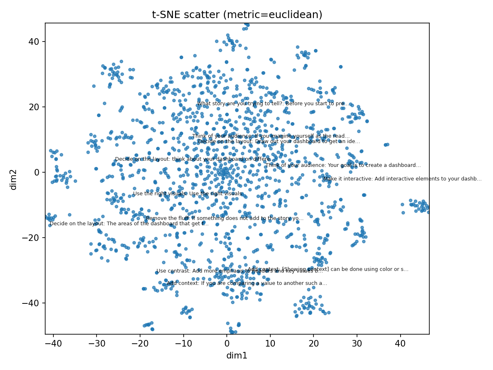
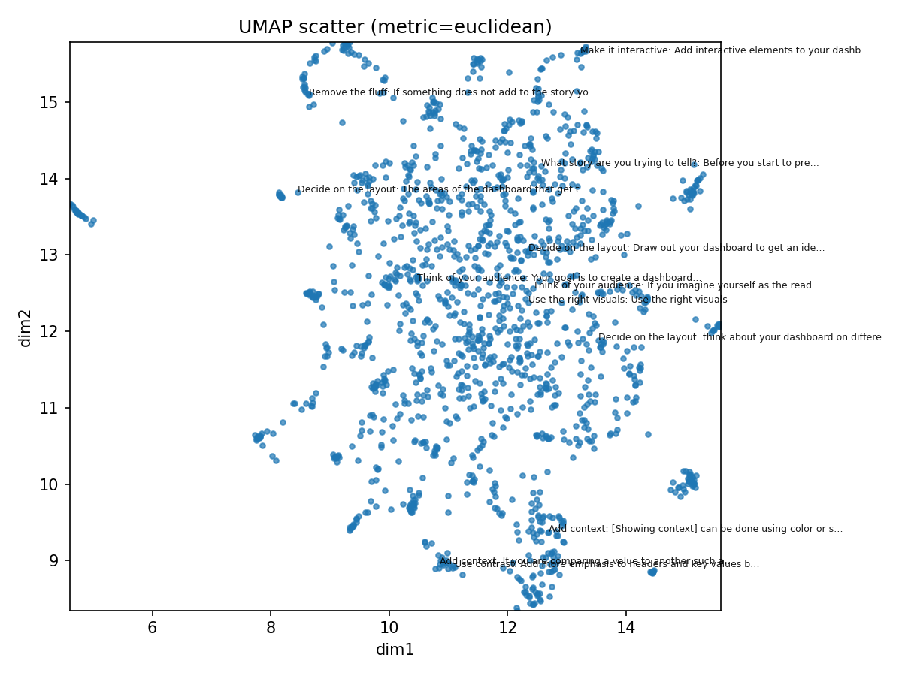
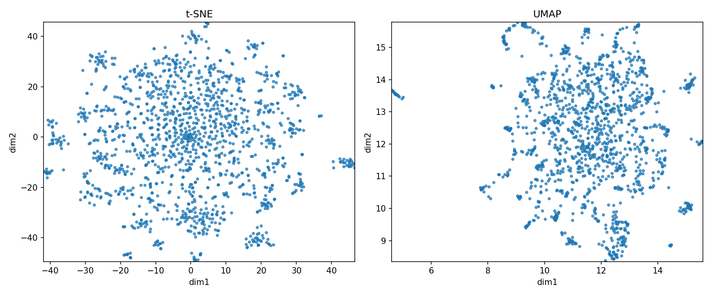

1. Project Overview
This project delivers an interactive Streamlit-based explorer for analyzing short-text embeddings. The tool enables researchers to quickly inspect cluster coherence, neighborhood structure, and projection quality across different dimensionality reduction techniques (PCA, t-SNE, UMAP) and preprocessing variants.
What This Project Is
The Short-Text Embedding Explorer is a visualization and analysis tool built around a modular pipeline: clean text → TF-IDF vectorization → dimensionality reduction → neighbors/clustering → metrics and interactive plots.
The explorer provides linked selections across all projection views, meaning a click or lasso selection in one embedding view immediately highlights the corresponding documents in all other views. This enables rapid comparison of how different algorithms structure the same data.
Project Goals
- Build a reproducible framework for evaluating short-text embedding quality
- Enable systematic comparison of PCA, t-SNE, and UMAP projections on the same dataset
- Support exploratory analysis workflows with selection, search, filtering, and export
- Create a stable foundation for future research on text visualization design guidelines
Current Status
The explorer is stable and usable for real analysis. Core functionality includes linked brushing, selection history with undo, document search and filtering, cluster statistics, two-document comparison panels, and export of selected document IDs. The artifact pipeline produces consistent, validated outputs that can be loaded via a simple bundle selector.
2. Results
The project produced a working interactive explorer and a validated artifact pipeline. This section describes what was built, how it was validated, and what it enables.
Explorer Features
The Streamlit explorer includes the following capabilities:
- Linked brushing: Selections sync across PCA, t-SNE, and UMAP views in real time
- Hover tooltips: Document ID, text snippet, and metadata on hover
- Search and filter: Search by doc_id, keyword, or phrase; filter by cluster or metadata
- Selection history: Undo/redo selections without losing exploration context
- Comparison panel: Side-by-side documents with cosine/Euclidean metrics and neighbor tables
- Export: Download selected doc_ids as JSON for downstream analysis
- Cluster statistics: Quick-select buttons and summary stats per cluster
- Similarity heatmap: Cosine similarity matrix for selected points (size-guarded to prevent performance issues)
Pipeline and Artifacts
The pipeline produces a consistent set of artifacts for each preprocessing configuration:
| Artifact | Format | Description |
|---|---|---|
tfidf_matrix.npz |
Sparse matrix | TF-IDF vectors (configurable n-grams) |
tfidf_vectorizer.pkl / vocabulary.pkl |
Pickle | Vectorizer and vocabulary for reproducible transforms |
coords.npy |
NumPy array | PCA coordinates (2D) |
coords_tsne.npy |
NumPy array | t-SNE coordinates (2D) |
coords_umap.npy |
NumPy array | UMAP coordinates (2D) |
nn_indices.npy / nn_distances.npy |
NumPy array | Nearest-neighbor indices and distances |
cluster_labels.npy |
NumPy array | Cluster assignments |
processed_data_with_clusters.csv |
CSV | Cleaned text, doc_id, metadata, and cluster labels |
metrics.json / config.json |
JSON | Evaluation metrics and run configuration snapshot |
doc_ids.txt |
Text | Stable document identifiers, one per line |
Artifact bundles are saved per run under artifacts/, with variant configurations (e.g., preproc_no_stopwords/) stored in separate subdirectories. A bundle selector in the Streamlit UI allows switching between configurations without manual path editing.
Validation and Testing
The project includes a test suite to catch regressions and ensure reproducibility:
- Numeric regression tests: Baseline JSON files with tolerance thresholds detect metric drift across runs.
- Reproducibility smoke tests: Fixed RNG seeds verify that identical inputs produce identical outputs.
- Stability tests: 10 repeated runs measure variance and timing consistency.
- Distance metric validation: Ensures cosine vs. Euclidean configurations remain consistent.
- Artifact validation checklist: Verifies row counts, alignment, and dimensionality across all
.npyfiles before loading.
Validation in practice: The artifact checklist caught two stale bundles with mismatched row counts before they caused silent selection bugs in the explorer. This kind of early detection is exactly what the validation infrastructure was designed for.
Figures
Representative plots generated from the pipeline. Files live in visualizations/ (and visualizations_test/ for comparisons). When served from GitHub Pages, use paths like ../visualizations/….
- PCA/SVD scatter:
visualizations/svd_scatter.png - t-SNE scatter:
visualizations/tsne_scatter.png - t-SNE heatmap:
visualizations/tsne_heatmap.png - UMAP scatter:
visualizations/umap_scatter.png - UMAP heatmap:
visualizations/umap_heatmap.png - t-SNE vs UMAP comparison:
visualizations/tsne_vs_umap.png - Point drift:
visualizations/point_drift.png




3. Process
This section documents the work that went into the project, including the timeline, major tasks, and things that didn't work as expected.
Where Time Went
Based on weekly status reports, time was distributed across several categories. The largest chunks went to interaction logic—getting selections, linked brushing, and undo to work reliably across views took multiple weeks and repeated debugging. The testing infrastructure (regression tests, reproducibility checks, stability runs) also required significant investment, particularly integrating tests with the existing evaluation code. Earlier weeks included ramp-up time spent reading papers, exploring the AbstractsViewer codebase, and learning the dimensionality reduction tools.
Specific tasks from status reports:
- Fixing points not rendering + alignment bugs: ~5.5 hours (but revealed deeper issues)
- Selection interactions, lasso, undo: ~3 hours
- Analysis/export features (metrics, heatmap, JSON export): ~3 hours
- UI polish and bug fixes: ~2.5 hours
- PCA rebuild + artifact loader: ~5.5 hours
- Comparison panel + neighbor lists: ~2 hours
- Artifact validation checklist: ~2.5 hours
- Linked brushing implementation: ~6.5 hours
- Hover tooltips, search, filters: ~4 hours
- Regression/reproducibility/stability tests: ~10 hours
- Distance metric validation: ~2 hours
- Pipeline expansion and measurement routines: ~10 hours
- Reading and ramp-up (papers, documentation, existing codebases): ~15+ hours across early weeks
Development Timeline
Phase 1: Pipeline Foundation (Weeks 1–3). Set up preprocessing pipeline with tokenization, stopword removal, and lemmatization. Built TF-IDF matrix generation and initial PCA scatterplot. Read foundational papers on UMAP and t-SNE.
Phase 2: Dimensionality Reduction Comparison (Weeks 4–5). Implemented t-SNE and UMAP projections. Compared neighborhood consistency across methods. Began modularizing the codebase into src/processor package structure.
Phase 3: Interactive Explorer (Weeks 6–8). Built Streamlit explorer with linked brushing across all three projection views. Added hover tooltips, search, filtering, and the two-document comparison panel. Debugged index alignment issues extensively.
Phase 4: Stabilization and Testing (Weeks 9–11). Fixed the alignment bug that caused selection mismatches. Added selection history/undo. Implemented regression, reproducibility, and stability tests. Created artifact validation checklist.
Phase 5: Polish and Documentation (Weeks 12–14). Added artifact bundle loader with dropdown switching. Hooked comparison panel to stored neighbor lists. UI polish (lasso default, colors, legends). Wrote documentation and this writeup.
What Didn't Work
Not everything went smoothly. Here are the significant dead ends and bugs that shaped the project:
Unsafe fallback logic. The initial coordinate lookup code had a fallback path that used local filtered indices to index into global coordinate arrays. This caused silent misalignment: hovering over a point in one view would highlight a completely different document in another view. The fix was to remove the fallback entirely and always resolve coordinates via doc_id mappings. This took approximately 2.5 hours to diagnose and 1 hour to fix, after initially estimating 30 minutes.
Shell commands in Python source. At one point, shell commands were accidentally pasted into the Python plotting code. The code still ran (Python doesn't fail on unreachable statements after a return), but the plotting logic was never executed. Points simply didn't appear. This took approximately 3 hours to track down because the error was silent. A linter would have caught this instantly.
Stale artifact bundles. Early in development, I generated multiple artifact bundles with different preprocessing options but didn't verify that all files had matching row counts. Two bundles had TF-IDF matrices with different numbers of documents than their coordinate files. The artifact validation checklist was created specifically to prevent this from happening again.
UMAP reproducibility. UMAP results varied between runs even with the same input data, which made debugging difficult. The fix was to explicitly set the random_state parameter and use n_jobs=1 to disable parallelism during testing.
The general pattern across the semester: interaction logic and debugging consistently took longer than anticipated, while additive features (new panels, new exports) were more predictable. Tasks involving shared state or cross-component coordination expanded in scope once implementation began.
4. What I Learned
This section documents the technical and non-technical lessons from the project.
Technical Lessons
Index alignment is the linchpin
Every interaction in the explorer—selection, hover, search, comparison—depends on the assumption that row i in coords.npy corresponds to row i in coords_tsne.npy, coords_umap.npy, cluster_labels.npy, and processed_docs.csv. Any mismatch breaks everything silently. The solution is to always generate all artifacts in a single pipeline run, use doc_id as the canonical key (never positional indices), and validate alignment before loading.
Reproducibility requires explicit infrastructure
UMAP and t-SNE are stochastic algorithms. Without fixed random seeds and controlled parallelism, results vary between runs. This makes debugging nearly impossible because you can't tell if a change in output is due to your code change or random variation. The reproducibility smoke tests exist specifically to catch this.
Interaction reliability matters more than feature count
I spent roughly 6 hours on selection/undo/lasso polish vs. 2 hours on the parameter preview panel. The former made the tool usable for real exploration; the latter was nice-to-have. Prioritizing interaction reliability over feature breadth was the right call.
PCA as stable baseline
Unlike t-SNE and UMAP, PCA is deterministic and fast. This makes it invaluable for debugging: if something looks wrong in all three views, the bug is in shared code; if it's only wrong in t-SNE/UMAP, the bug is in those pipelines or their configurations.
Regression baselines catch silent drift
Small changes to preprocessing (e.g., changing the n-gram range) can propagate through the entire pipeline and change clustering results. Without regression tests that compare against known baselines, these changes go unnoticed until someone manually inspects the output.
Non-Technical Lessons
Status reports are future-you documentation
The weekly status reports turned out to be invaluable for writing this document. The "why are 1 and 2 different" sections captured context that I would have completely forgotten otherwise.
Debugging time is unpredictable
Features that "should" take an hour can take a full day if they touch shared state or involve coordination between components. The safest assumption is 3–4× the naive estimate for anything interactive.
Validation checklists prevent repeat mistakes
After catching the stale bundle bug, I wrote a checklist and used it every time I generated new artifacts. This took maybe 5 minutes per run but saved hours of potential debugging.
Connect engineering to goals
Early status reports focused on engineering details (test coverage, CI integration) without explaining why they mattered. The feedback to connect details to project goals was valuable: every engineering investment should trace back to enabling better analysis or more reliable results.
5. Self-Evaluation
What Went Well
- The explorer works. It's stable enough for real analysis and demos. Linked selection, search, and comparison all function correctly.
- Test coverage is solid. Regression, reproducibility, and stability tests exist and run. The artifact validation checklist has already caught bugs.
- The codebase is modular. The refactor into
src/processormakes it possible to swap components (e.g., different vectorizers) without rewriting everything. - Documentation exists.
docs/TESTING.md, this writeup, and inline comments make it possible for someone else to pick up the project.
What Could Be Better
- No state persistence. Switching artifact bundles or reloading the page clears all selection and search state. This interrupts exploratory workflows.
- Manual bundle selection. The CLI doesn't yet support specifying an artifact bundle; you have to use the Streamlit dropdown or edit paths.
- Tests aren't in CI. The test suite runs locally but isn't integrated into GitHub Actions. This means tests can drift out of date.
- Limited to TF-IDF. The pipeline uses TF-IDF for vectorization. More sophisticated embeddings (sentence transformers, etc.) would enable better semantic comparisons.
What I Would Do Differently
- Start with alignment validation. I would implement the artifact checklist in week 1, not week 10. Most of the painful debugging came from alignment issues that could have been caught earlier.
- Add a linter and basic CI early. The shell-commands-in-Python bug would have been caught instantly by a linter. Setting this up takes 30 minutes and saves hours.
- Build the comparison panel on stored data from the start. Early versions recomputed neighbors on the fly, which was slow and made results inconsistent. Using stored artifacts from the beginning would have been cleaner.
Advice for Someone Starting a Similar Project
- Nail down your data contracts first. Define what each artifact file contains, what its shape is, and how it relates to other files. Document this before writing any code.
- Use a deterministic algorithm (PCA) as your debugging baseline. When something goes wrong, compare against PCA to isolate whether the bug is in shared code or algorithm-specific code.
- Budget 3–4× for interaction logic. Anything involving selection, hover, or cross-component state will take longer than you think.
- Write validation checks as you go. Don't wait until you hit a bug to add a check. If something could go wrong, check for it.
- Keep status reports. They're annoying to write but invaluable for reflection and writeups.
6. Deliverables
Repository Structure
- src/processor/ # Core pipeline modules
- __init__.py
- preprocess.py # Text cleaning, tokenization
- vectorize.py # TF-IDF generation
- reduce.py # PCA/SVD dimension reduction
- embed.py # t-SNE, UMAP
- cluster.py # HDBSCAN, KMeans
- neighbors.py # K-NN computation
- viz.py # Plotting utilities
- scripts/
- run_all.py # Main entry point
- prototype/
- streamlit_app.py # Interactive explorer
- tests/
- test_distance_metric_consistency.py
- test_integration.py
- test_metrics_regression.py
- test_metric_stability.py
- test_pipeline_reproducible.py
- test_reduce_neighbors.py
- test_vectorize.py
- test_viz.py
- artifacts/ # Generated outputs
- preproc_default/ (example)
- preproc_no_stopwords/ (example)
- newsgroups/
- visualizations/
- docs/
- TESTING.md
- README.md
- requirements.txt
Key Entry Points
| Purpose | Command |
|---|---|
| Run full pipeline | python run_pipeline.py |
| Run pipeline + evaluation | python -u scripts/run_all.py |
| Evaluation only (skip pipeline) | python -u scripts/run_all.py --skip-pipeline |
| Dry run (config snapshot only) | python -u scripts/run_all.py --dry-run |
| Launch explorer | python -m streamlit run prototype/streamlit_app.py |
| Run tests | pytest tests/ |
Artifact Validation Checklist
Before loading any artifact bundle, verify:
- Row count parity: All
.npycoordinate files andcluster_labels.npyshould have the same number of rows asprocessed_docs.csv. - TF-IDF dimensionality:
tfidf_matrix.npzshould have shape(n_docs, n_features)wheren_docsmatches the coordinate files. - Neighbor indices in range: All values in
neighbors_*.npyshould be valid indices into the coordinate arrays. - No NaN/Inf: Coordinate arrays should contain only finite values.
- doc_id uniqueness: The
doc_idcolumn inprocessed_docs.csvshould have no duplicates.
7. Annotated Bibliography
UMAP: Uniform Manifold Approximation and Projection for Dimension Reduction
Core algorithm reference for UMAP. Key insight: the min_dist and n_neighbors parameters trade off local vs. global structure preservation. Lower min_dist produces tighter clusters but can create artificial separation; higher n_neighbors captures more global structure but loses local detail. The reproducibility notes were essential for getting consistent results across runs.
Understanding How Dimension Reduction Tools Work: An Empirical Approach to Deciphering t-SNE, UMAP, TriMAP, and PaCMAP for Data Visualization
Comparative analysis of dimensionality reduction algorithms. Useful for understanding when UMAP clusters are "real" vs. artifacts of the algorithm. The paper's analysis of neighborhood preservation metrics informed the design of the comparison panel.
How to Use t-SNE Effectively
Interactive explanation of t-SNE behavior. Key takeaway: perplexity effectively sets the scale of the neighborhood, and you should try multiple perplexity values. Cluster sizes in t-SNE visualizations are not meaningful; only relative distances within clusters are interpretable.
Serendip: Topic Model-Driven Visual Exploration of Text Corpora
Influential text visualization system. The flexible linking between overview and detail views informed the design of the linked brushing in this project.
embComp: Visual Interactive Comparison of Vector Embeddings
System for comparing different embedding spaces. The neighborhood comparison approach (showing which neighbors are preserved vs. lost across embeddings) influenced the comparison panel design.
Streamlit Session State Documentation
Essential reference for maintaining selection state across Streamlit reruns. The key insight is that session state persists across widget interactions but not across page reloads, which explains why state persistence remains a TODO.
Plotly Python Selection Events
Documentation for capturing lasso/box/click selections in Plotly. The plotly_events library was necessary because native Streamlit-Plotly integration doesn't expose selection data. Workarounds were needed for default drag mode.
8. Quick Start Guide
Installation
# Clone the repository (if not already cloned)
git clone https://github.com/nullPtrErikaS/research.git
cd research
# Create virtual environment (recommended)
python -m venv .venv
# On Windows (PowerShell): .\.venv\Scripts\Activate.ps1
# On macOS/Linux: source .venv/bin/activate
# Install dependencies
pip install -r requirements.txtRunning the Pipeline
# Run full pipeline (preprocessing, vectorization, embeddings, clustering)
python run_pipeline.py
# Run pipeline + evaluation (orchestrator script)
python -u scripts/run_all.py
# Evaluation only (skip pipeline)
python -u scripts/run_all.py --skip-pipeline
# Dry run (write config snapshot, no computation)
python -u scripts/run_all.py --dry-runLaunching the Explorer
# Start the Streamlit app
python -m streamlit run prototype/streamlit_app.py
# The app will open in your browser at http://localhost:8501Running Tests
# Run all tests
pytest tests/
# Run specific test file
pytest tests/test_regression.py
# Run with verbose output
pytest tests/ -vCommon Issues
Plots are blank: Check that the artifact bundle has matching row counts across all .npy files. Run python scripts/run_all.py --mode dry to validate.
Selection highlights wrong documents: This usually means doc_id alignment is off. Regenerate artifacts with a fresh pipeline run, or check that you're loading the correct bundle.
UMAP results differ between runs: Ensure random_state is set in the UMAP configuration. For testing, also set n_jobs=1 to disable parallelism.
Memory errors with large datasets: The similarity heatmap is size-guarded but other components may not be. For datasets larger than 10k documents, consider using the quick evaluation mode or subsampling.